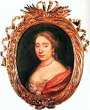

1662
• MOLI�RE
8 janvier : Les com�diens italiens, de retour � Paris, partagent de nouveau la salle avec Moli�re.
20 f�vrier : Mariage de Jean-Baptiste Poquelin et d'Armande B�jart � Saint-Germain-l'Auxerrois.
26 mars-21 avri : Cl�ture de P�ques. Br�court et La Thorilli�re, venus du Marais, entrent dans la troupe.
8-14 mai : Premier s�jour de la troupe � la cour.
26 d�cembre : Premi�re de L'�cole des femmes au Palais-Royal.
• VIE TH��TRALE ET LITT�RAIRE
La Rochefoucauld, M�moires (�dition subreptice de Leyde).
Corneille, Sertorius.
• ARTS, SCIENCES ET RELIGION
A. Arnauld et P. Nicole, La Logique ou l'Art de penser.
Mort de Pascal.
Borromini, fa�ade de Saint-Charles-aux-Quatre-Fontaines � Rome.
